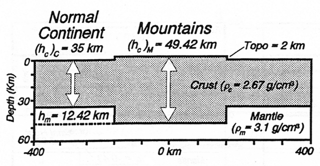
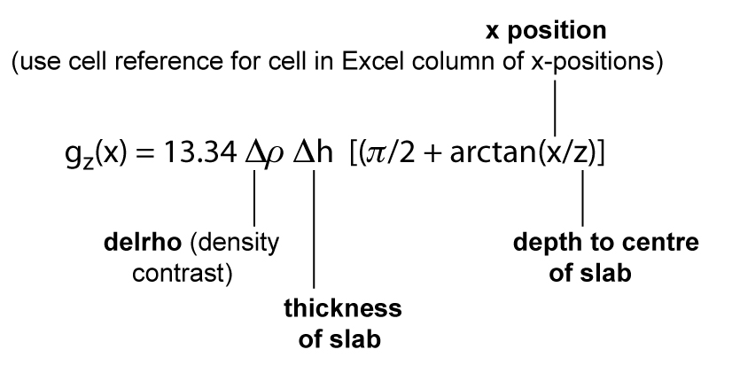
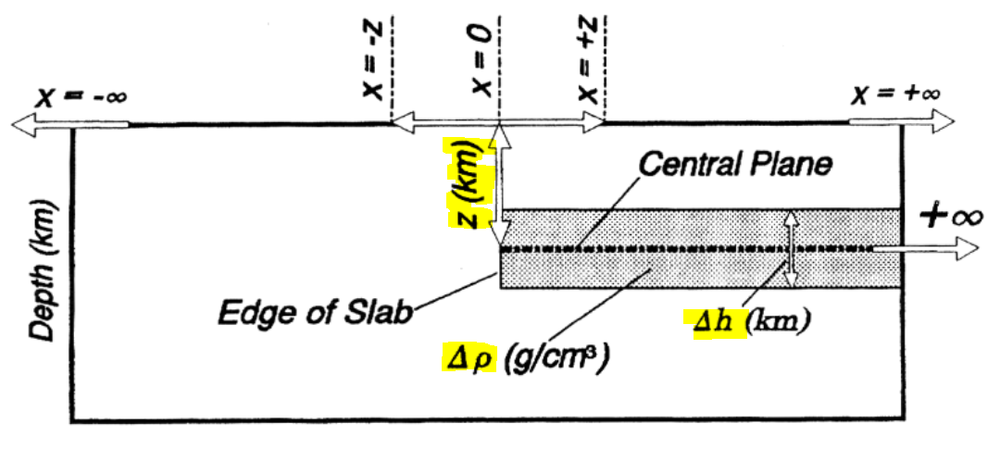
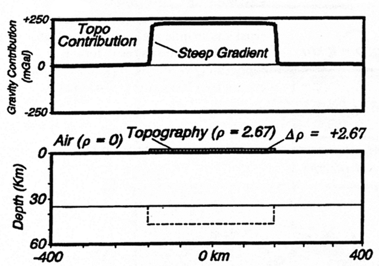
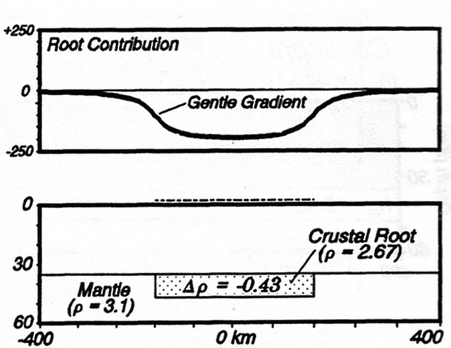
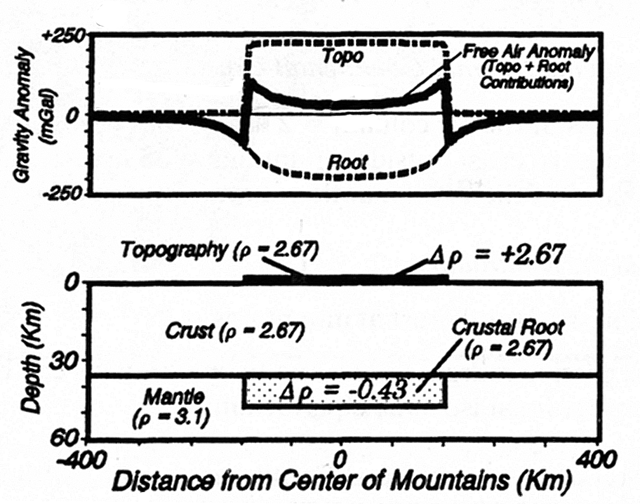
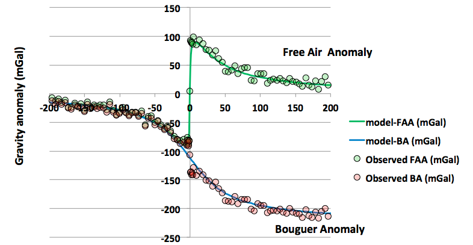
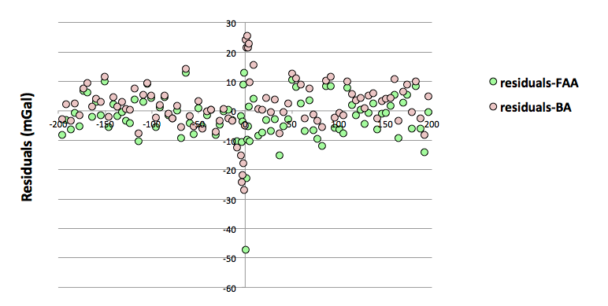
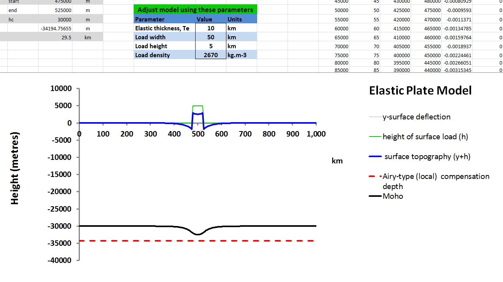
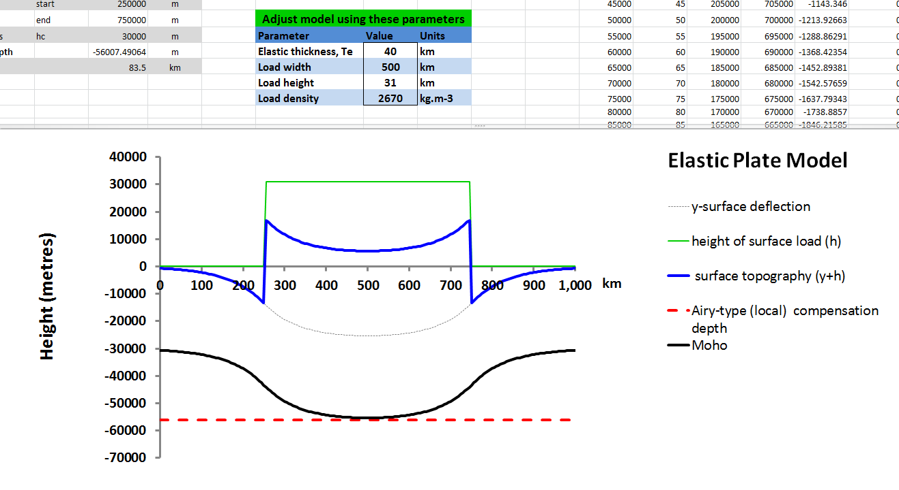

|
|
|
| Lab notes |
Lab data |
Elastic Model |
Lab 4
Gravity & Crustal Structure: using the semi-infinite slab approximation to interpret gravity anomalies across a mountain range

In the previous lab sessions we have focused on interpreting gravity anomalies that occur on a local scale (circa 10s km). The objective of this lab session is two fold. Firstly, it should help you to consolidate your understanding and practical skills at making standard gravity corrections to observed data. Secondly, we want to extend and advance the concept of forward modelling to be able to deal with gravity anomalies occurring over a much larger length scale (circa 100s km), such as those characteristic of passive continental margins or mountain ranges.
The geophysical aim is to be able to use forward modelling techniques to interpret gravity measurements to infer the nature of the crustal structure beneath these tectonic features, and specifically to assess the degree and style of isostatic compensation of surface loads acting on the crust, such as topography.
Task 1
Implement a model which predicts the Free Air and Bouguer gravity anomalies measured at the surface along a transect across a mountain range (please review pages 248-250 and 256-260 in Chapter 8 of Lillie before/while attempting these tasks).
The approach to setting up the semi-infinite slab model is very similar to the way we set up the model for a buried spherical object in Lab 2 and Lab 3. The key difference, of course, is that the geometry of the model is different, and so the parameters that define the shape of the object we are modelling are different. However, the way in which we design the layout within Excel is identical, i.e. we need a column of x-distances marking the positions along the transect where we will calculate the gravity anomaly values.
In this case start by setting up a model along a 500km long transect, from -250km to 250km with a spacing of 5km.
The equation we need is;

The x values in the equation above will be read from the column of distances. The three "fixed" parameters, i.e. delrho (density contrast of slab), delh (thickness of slab) and z (depth to centre line of slab...measured from the surface) should be defined as named variables.

The key here is to recognise that we will need two separate semi-infinite slabs to represent our mountain gravity model. One for the topography of the mountain range, i.e. the topography above sea level, and a second one for the crustal root as a separate slab. Each slab can then be treated separately and independantly using the semi-infinite slab approximation formula.
The syntax for implementing this equation for the slab representing the topography in Excel looks like this;
=13.34*rhoc*height*(PI()/2+ATAN(E4/(height/2)))
Where "height" is my named parameter for the height of the topography, "rhoc" is the crustal density, and my distances were in column E. Note here I calculate the depth as height/2...because for the topography slab the depth to the center line of the slab is simply half the height. This is NOT the case for the depth to the centre line of the crustal root slab. Look at the cartoon/diagram above for the model geometry (also read/see Lillie, Chapter 8, page 249) if you are unsure about these values. The Excel function called "ATAN" returns the arctan and PI() returns the value of pi.
Note also that for this model ALL distances are in km (i.e. x-distance, height, and depth values), not metres, as they were for the spherical object model.
When calculating the density contrast for the slab representing the topography remember this is the density of the slab (here rhoc, as it is crust) minus the density of what surrounds it, in this case air. The topography is displacing air. So the density contrast of the topographic slab is 2.67-0=2.67 g.cm-3.

When calculating the density contrast for the slab representing the crustal root remember this is the density of the slab (here it is also rhoc, as the crustal root is made of crustal material...hence we refer to it as...you know what I mean) minus the density of what surrounds it, in this case mantle (the crustal root extends down into the mantle and so is displacing mantle material). So the density contrast for the root is 2.67-3.1= -0.43 g.cm-3. Note it is a NEGATIVE density contrast. This is what gives rise to the positive (i.e. upward acting) bouyancy force that supports the topographic load (which produces a force that acts downwards).

Once you have calculated the gravity contributions for the two slabs separately, then the model Free Air Anomaly is simply the sum of these two contributions.
Note that the model Bouguer Anomaly is given exactly by the predicted gravity contribution of the crustal root alone. Remember that the purpose of making all the corrections to the observed gravity measurements is to remove the gravity effects of topography to end up with the Bouguer Anomaly...so the root contribution, on its own, is a model of the Bouguer Anomaly.

Task 2
a) Down load the synthetic mountain gravity data from the Moodle site, or from this page (top right Excel icon). The simplest way to achieve this is to select and download the Excel formatted file, or if you use the ascii text format from Moodle then open the link, highlight to select the text and copy the data (make sure you select ALL the columns and headings) and then paste this into an empty Excel workbook page (use Paste Special-> text). Calculate the Free Air anomaly and the Bouguer anomaly for each of the station locations. This will require calculation of the appropriate theoretical gravity value at each station (use the 1967 standard formula, page 226, Chapter 8, Lillie as we did for Lab 1) and then calculating and applying the appropriate Free Air correction (i.e. FAC = 0.308*h mGal) and Bouguer Correction (BC = 0.112*h mGal) as required.
b) Use a suitable semi-infinite slab model to test whether the mountain range (from where the data were obtained) is in Airy isostatic equilibrium or not. To do this adapt/copy your semi-infinite slab model from Task 1, and predict the Free Air and Bouguer anomalies at all stations where there are observed data using a simple 2-slab mountain model assuming that the mountain is in local Airy-type isostatic equilibrium (as described in the example shown in Chapter 8, page 256-260 in Lillie and implemented in Task 1 above).
The first part of this task is to process and correct the observed gravity data and calculate the Free Air and Bouguer anomalies for all locations. Essentially this is exactly the same procedure you will have used to process the Mull gravity data for Lab 3.
For the second part of the task, i.e. to set up a suitable model, just plagiarise your model that you created for Task 1 above. Be careful though if/when cutting and pasting columns that use formulae though, as the cell referencing and named variables used can get confused/corrupted...so check everything works as you intended.
You should attempt to fit both the FAA and the BA values, as shown below.

And, don't forget to plot the residuals versus distance too, so you can assess whether there is any structure in the way these are distributed.

Task 3
Download the Elastic Plate Model example spreadsheet file (link top right of this page). Use this model of regional isostatic compensation to investigate how the lithosphere responds isostatically to loads of varying width (length) and for varying strengths (i.e. effective elastic thickness, Te, values).
You can vary the width, height and density of the topographic load in the model by changing the values for these parameters in the spreadsheet. If you are interested in the "gory details" of the model and how it is coded in Excel please inspect the parameters, formulae and values in the grey cells (on left) and follow up with reading relevant pages from chapter 3 from Watts (2001)...reference details are in the spreadsheet.
Example model of an ocean island, such as Hawaii (load height 5km (height of volcanic island above sea bed), width 50km, Te 10km);

Example model of a mountain range (load height 31km (additional crustal thickness due to orogenic shortening), width 500km, Te 40km);
